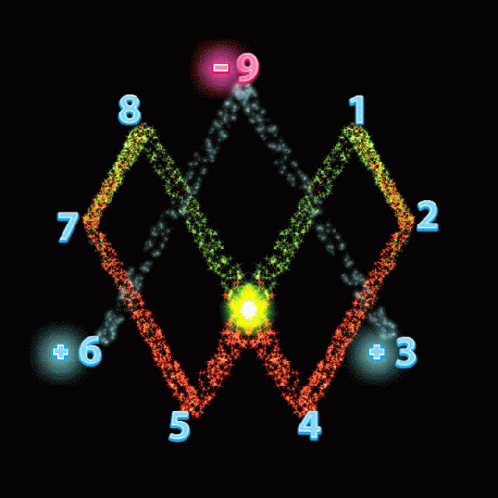

Dans les profondeurs du monde interdit, où
s'entrelacent les fils du mythe et de la vérité, nous nous
retrouvons confrontés à de profondes questions sur les sciences mystérieuses qui ont été ignorées ou
marginalisées à travers les âges. Ces sciences, qui peuvent paraître fantaisistes ou absurdes, portent en elles
des secrets qui peuvent changer notre compréhension de la réalité
Il existe des preuves que des civilisations telles que les anciens Égyptiens ou les
Incas
possédaient une technologie très avancée, peut-être au-delà de ce que nous connaissons aujourd'hui, mais ces
connaissances ont été perdues ou cachées.

Pour des raisons complexes et difficiles à expliquer aujourd’hui,
la vérité est peut-être
plus complexe que nous l’imaginons, et certaines connaissances ne sont accessibles qu’à ceux qui les
recherchent
de manière non conventionnelle. Ce qui est enseigné dans les écoles ne constitue qu’une petite partie d’un
ensemble plus vaste et a été mélangé à du poison et à des mensonges pour servir certains programmes. Les
sciences cachées ne sont apprises que par quelques-uns, et sensibiliser les gens est notre devoir.